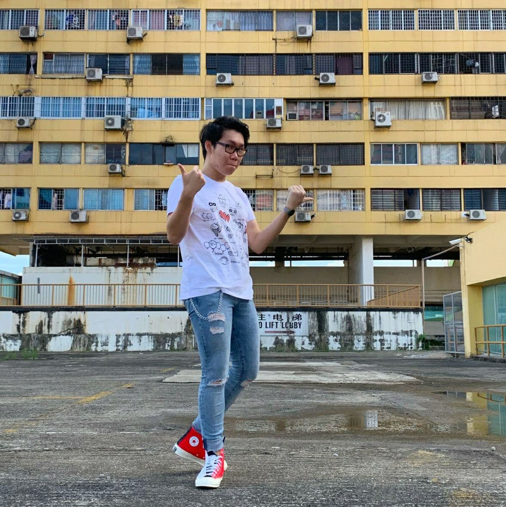

About Elective
Welcome to Singapore Polytechnic's poly-wide elective Digital Fabrication & Prototyping Fundamentals (ET1000). This elective module is a self-directed project where students develop design thinking and given the access to the basics knowledge of digital fabrication technologies.
Digital Fabrication Technologies:
- Computer-Aided Design (CAD)
- Laser Cutting
- 3D Printing
- Microcontroller and Microprocessor
- Computer Numerical Control (CNC)
and more...!
About Me

Greetings all!
My name is Guo Liang,
currently a Year 2 student in Singapore Polytechnic
pursing Diploma in Aeronautical Engineering (DARE).
Many knew me as a "DAYTIME ENGINEER" and a "NIGHTTIME MUSICIAN".
Generally as a curious individual, this personality made me wonder
the possibilies I can explore as an engineering student.
It is a pure sense of joy to witness how some particular unrelated
things coming together and form a new invention. Truely facinating!
At my after hours availabilty, I spend my creativity on music production.
I push my boundaries beyond my creativity limitations and share my stories
in a melodic perspective. I believed everyone in having their own unique
way of expressing themselves, well, I found mine.
Besides that,
I am here today in ET1000 with one reason, passion. I want to learn and
find out more into the field of digital fabrication and it's magic behind each
inventions.
Thank you for visiting my site, catch you another time!